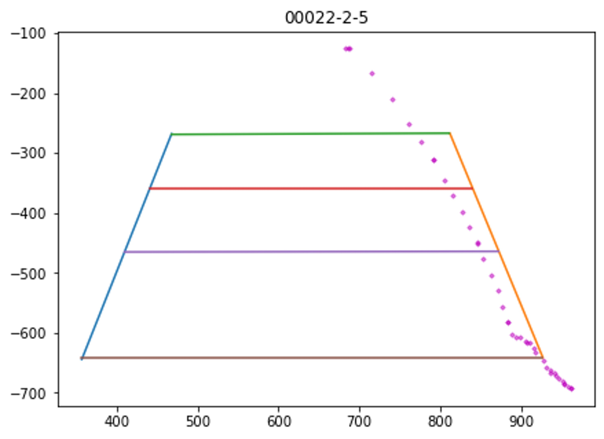
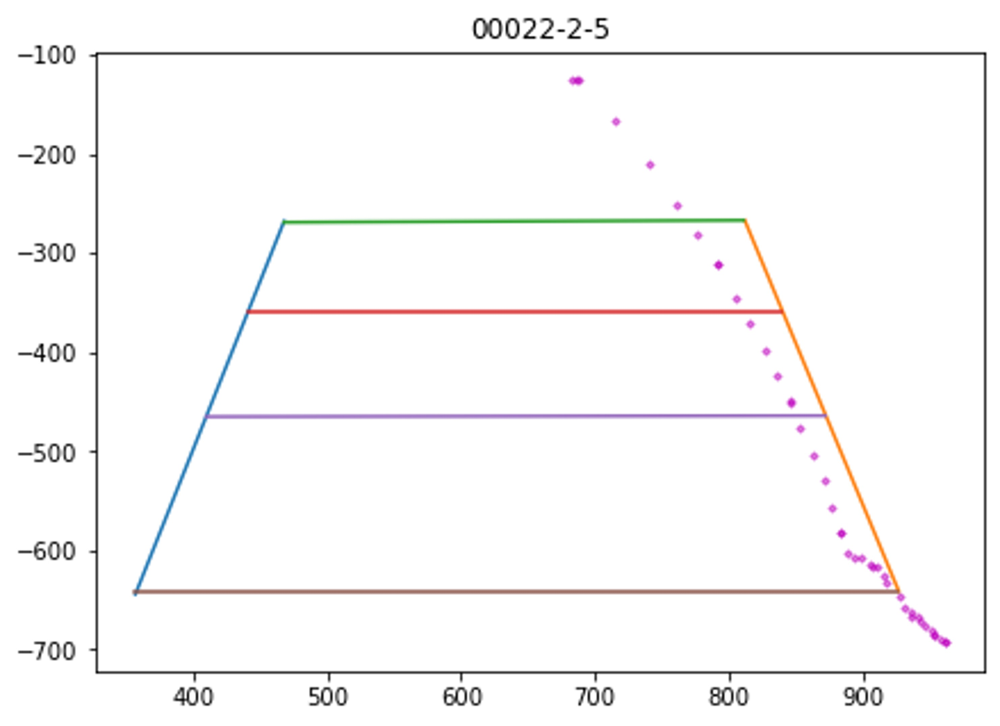
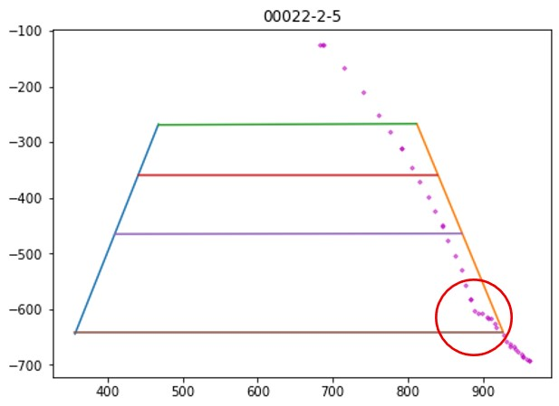
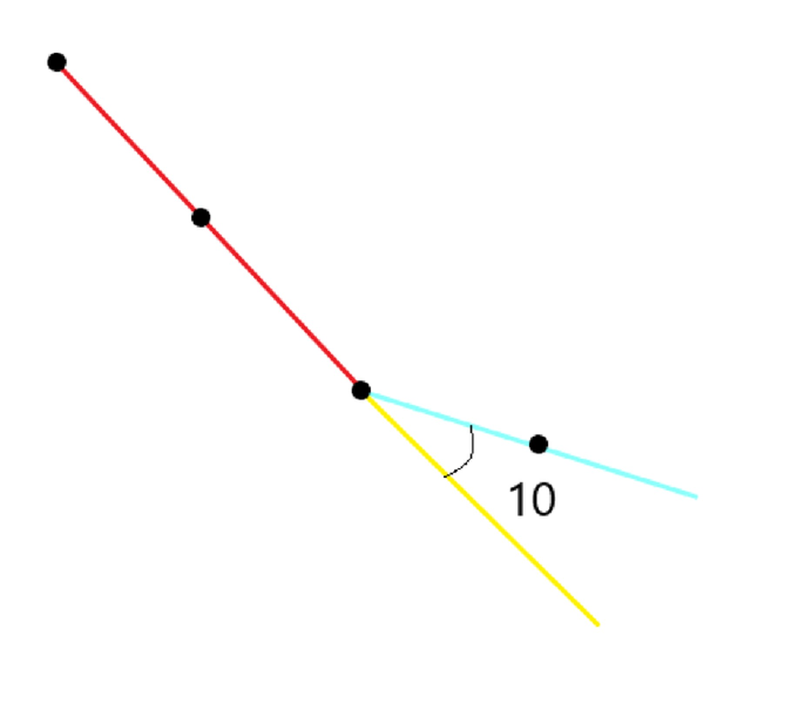
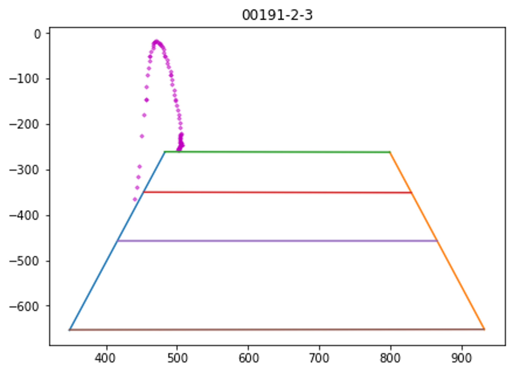

步驟1
先將球種分為兩類(圖一)、(圖二)，再依照斜率分別判斷。
圖一(左)/圖二(右)
先將球種分為兩類(圖一)、(圖二)，再依照斜率分別判斷。
圖一(左)/圖二(右)
發生圖一情況時，我們判斷球的落地位置，來看是否在界內。
 發生圖二情況時，角度連續出現小於20度時，
當角度大幅變動，即判斷落地位置，再看是否在界內。
全部測試234個影片準確率：0.76。
符合左圖有60個影片，準確率：0.76。/符合右圖有174個影片準確率：0.76。
靜宜大學資料科學暨大數據分析與應用學系2024羽球辨識系統專題網頁